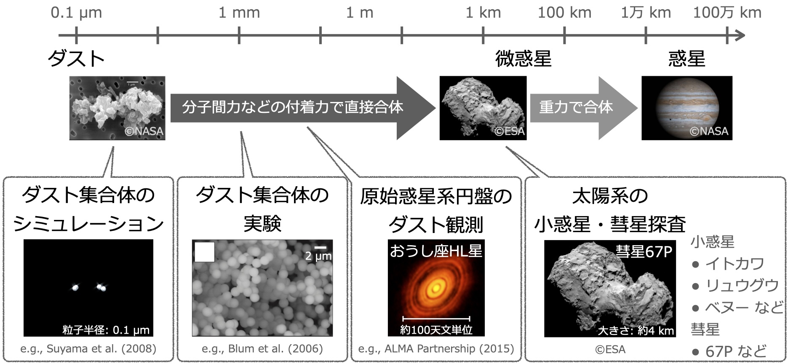
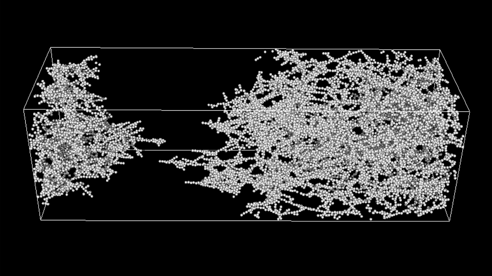

Research
数値計算で探るダスト集合体の物質強度
 惑星は、ミクロンサイズのダストが集積し形成されたと考えられています。 キロメートルサイズになると微惑星と呼ばれるようになりますが、その微惑星形成過程にはまだ多くの謎が残っています。 その謎を解き明かすため、微惑星の生き残りと考えられている太陽系の彗星や小惑星の探査や観測が盛んに行われています(例: ロゼッタやはやぶさ2)。 私たちは、このような探査結果を用いて微惑星形成過程を解き明かすため、ダストが集積し形成されたダスト集合体の性質を数値計算を用いて調べ、モデルを作成しています。
引張強度

太陽系探査により、彗星や小惑星の引張強度など物性すらも明らかになってきました。
そこで私たちは、数値計算によって微惑星形成途中のダストの集合体の引張強度を求め、モデルを作成しました。
探査により解明されたチュリュモフ・ゲラシメンコ彗星(67P)の引張強度と比較したところ、彗星はダスト集合体よりも非常にもろいということがわかり、
彗星のもろさを実現するために必要な構成粒子の性質を制限することに成功しました。
Tatsuuma et al. 2019, ApJ, 874, 159
さらに、ダスト集合体の引張強度モデルを用いて、原始惑星系円盤内での新たなダスト集合体の破壊過程を提案しました。
ダスト集合体は、原始惑星系円盤内で受けるガス流により、カザグルマのように自転運動します。
そのときに受ける遠心力とダスト集合体の引張強度を比較することで、ダスト集合体が破壊するかどうか判定できます。
その結果、ダスト集合体の自転運動による破壊が微惑星形成に影響を与える条件を得ることに成功しました。
Tatsuuma & Kataoka 2021, ApJ, 913, 132
圧縮強度
 彗星や小惑星などの内部構造は、天体を構成する物質の強度と天体の自己重力のつりあいで決まっています。
そこで私たちは、彗星や小惑星の物理量から微惑星形成過程を探るため、数値計算によって微惑星形成途中のダストの集合体の圧縮強度を求め、公式化しました。
その結果、排除体積と呼ばれる、圧縮できない領域(ダスト集合体の構成粒子自体の体積と最密充填時の空隙の体積)を組み込むことで、数値計算結果をよく再現できることがわかりました。
彗星や小惑星などの内部構造は、天体を構成する物質の強度と天体の自己重力のつりあいで決まっています。
そこで私たちは、彗星や小惑星の物理量から微惑星形成過程を探るため、数値計算によって微惑星形成途中のダストの集合体の圧縮強度を求め、公式化しました。
その結果、排除体積と呼ばれる、圧縮できない領域(ダスト集合体の構成粒子自体の体積と最密充填時の空隙の体積)を組み込むことで、数値計算結果をよく再現できることがわかりました。
Tatsuuma et al. 2023, ApJ, 953, 6
さらに、ダスト集合体の圧縮強度モデルを用いて、ダスト集合体がキロメートルサイズになったときのバルク密度を求め、モデルを作成しました。
その結果、密度の低い太陽系外縁天体やメインベルト小惑星はダスト集合体で説明できることがわかりました。
しかし、ほとんどの太陽系外縁天体やメインベルト小惑星、彗星、地球近傍小惑星(イトカワやリュウグウなど)は、ダスト集合体モデルよりも密度が高く、
自己重力だけでない圧縮過程や、より大きな母天体の形成を経ていることが示唆されました。
私たちはこの結果を元に新たな微惑星形成シナリオを提案し、原始惑星系円盤観測で示唆されている密なダスト集合体が、微惑星の破片である可能性を提示しました。
Tatsuuma et al. 2024, ApJ, 974, 9